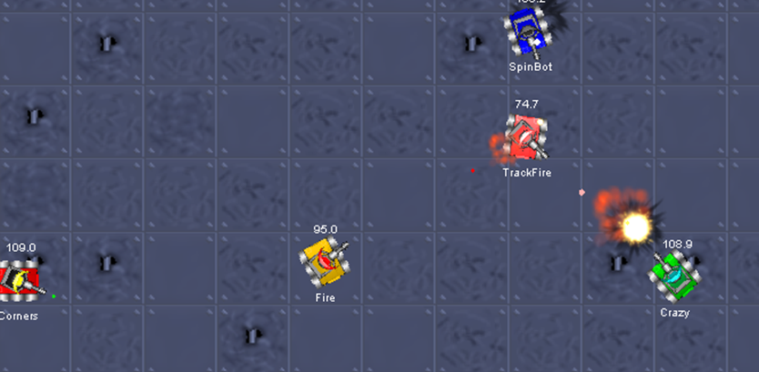

Velkommen til TechCafe på NNY efterskole. Kurset består af tre dele:
Vi laver en simpel webside og leger lidt med
-
Html
-
CSS. Både inline, internal og external (bootstrap)
-
JavaScript
introduktion
-
JavaScript til UI, f.eks. mouseover effekter på knapper og
billeder, hide/when funktioner, m.v.
- Event styring
Rigtig programmering med JavaScript.
-
Installation og opsætning af
Visual Studio Code
- Introduktion til programmering
-
'Hello World': Om programmering og syntaks. Input/output.
- 'Gæt et tal': Lær om loops og conditions
-
'Empirisk sandsynlighedsregning': Her lærer vi om
funktioner og libraries og leger med matematik.
-
Hvad er sandsynligheden for at slå en sekser med én terning?
- Og to seksere med seks terninger?
-
Vis summen af to terninger på en graf (normal fordelingskurve)
RoboCode: Build the best - destroy the rest!
-
Installation og opsætning af RoboCode. Tjek at alle har et
kørende program
- Introduktion til Java og Bots
-
Programmering af egen bot og lad den kæmpe mod de andre, som i
denne
video
